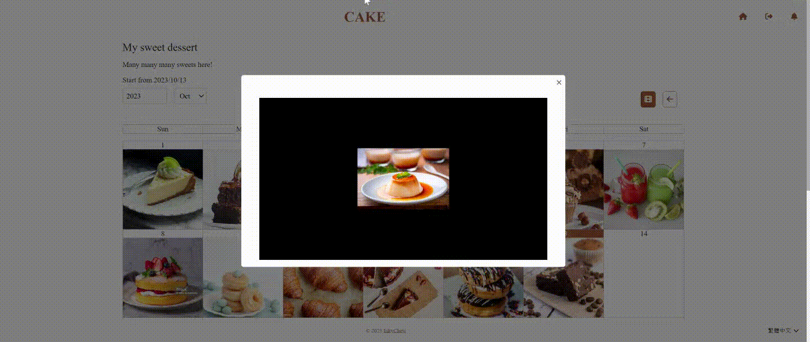

About
Welcome to Cake, where you can set any goals and assist in achieving it by uploading photos every day, helping you to stay committed. You can also review your progress through images, just like a diary filled with your hard work.
In Cake, you can also record those happy, touching or meaningful moments in your daily life and create your own life video.
You can add various categories to your plans.
In Cake, all categories are reviewed to avoid meaninglessness or illegality.
Through these categories, you can find like-minded friends, appreciate the growth of others,
and motivate yourself to continually improve.
Additionally, categories also help attract others to appreciate your growth journey.
If you can't find a suitable category, please contact Cake and suggest adding a new one.
Cake looks forward to building a community that collectively pursues progress.
Three Steps
-
Set up a Plan
Whether you're striving for personal growth, embarking on a creative project, or simply looking to
appreciate life's little moments, Cake allows you to set and track your goals with ease.
-
Daily Photo Uploads
Upload only one photo a day, giving you the power to preserve the moments that matter most to you. It's like building a visual story of your life, one snapshot at a time.
-
Monthly Video Creation

At the end of each month, Cake lets you effortlessly compile all your daily photos into a stunning video montage. Relive the past month's memories and share your journey with friends and family.
The story of Cake
Cake is a gift created for Mr.Tseng, allowing him to track his physical changes
and daily health meals through photos during his fitness process.
To encourage and support his journey towards a healthier life.